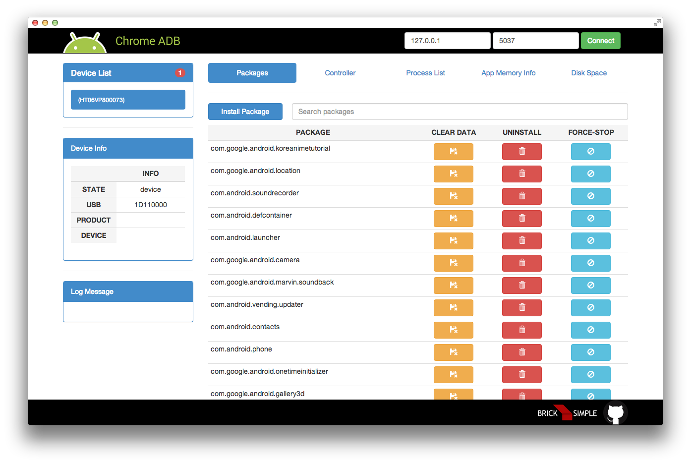

ADB 파헤치기
GDG Korea Android Conf. 
About Me
- @chtacan
- android, node.js, github, chrome
- 다양한 mobile & web tech
- how it works?
- 내가 원하는 것을 만들 수 있는 능력
- Ahnlab
안드로이드 앱을 개발한다구요?
그럼 ADB 쓰시는 겁니다.
- 로그 가져오기
- 디버거 연결하기
- 앱 설치하기
- 쉘에 붙어보기
다루는 것
- ADB? 왜?(동기부여)
- ADB 기능, 구성, 프로토콜
- ADB 확장하기
다루는 않는 것
- ADB 코드 분석
- ADB 명령어
- 머리로만 이해하기
시작하기 전에
adb ?
Android Debug Bridge
- 개발 머신과 안드로이드 기반의 단말을 연결
- 멀티 플랫폼 소켓 포워딩 서버
- 로그, 디버거 연결, 앱설치, 쉘, 파일 가져오기 등등
왜 ADB에 대해서 알아야 되나요?
도구 주도 분석
- 시스템에 접근하고 디버깅할 수 있는 도구를 익히고
- 시스템과 도구가 맞닿는 부분의 코드를 중심으로 분석
왜 ADB에 대해서 알아야 되나요?
- 원하는 결과를 즉시 확인할 수 있다.
- 텍스트 기반
- 나만의 도구로 확장하기 쉽다.
원하는 결과를 즉시 확인
ActivityManager activityManager
= (ActivityManager) getSystemService(ACTIVITY_SERVICE);
List<RunningTaskInfo> info = activityManager.getRunningTasks(1);
ComponentName topActivity = info.get(0).topActivity;
텍스트 기반
나만의 도구로 확장하기 쉽다.
var net = require('net');
var cmds = [{
cmd : 'host:transport-any',
expect : function(res) { return 'OKAY' === res; }
}, {
cmd : 'localabstract:chrome_devtools_remote',
expect : function(res) { return 'OKAY' === res; }
}, {
cmd : 'GET /json HTTP/1.1\r\n\r\n',
expect : function(res) { return true; }
}]
function prefixLen(cmd) {
var hexlen = cmd.length.toString(16);
var prefix = ('000'.concat(hexlen)).slice(-4);
return prefix.concat(cmd);
}
var socket = new net.Socket({
readable : true,
writable : true,
allowHalfOpen : true
});
socket.writeData = function() {
var data = this.cmds.shift();
if (!data) return;
this.expect = data.expect;
this.write(prefixLen(data.cmd));
}
socket.writeNext = function(res) {
if (this.expect && this.expect(res))
this.writeData();
}
socket.connect({port: '5037'}, function() {
this.cmds = cmds;
this.writeData();
this.on('data', function(chunk) {
var res = chunk.toString();
console.log(res);
this.writeNext(res);
});
this.on('drain', function() {
console.log('drain');
});
this.on('end', function() {
console.log('FIN');
});
});
$ node script.js
OKAY
OKAY
HTTP/1.1 200 OK
Content-Length:427
Content-Type:application/json; charset=UTF-8
[ {
"description": "",
"devtoolsFrontendUrl": "http://chrome-devtools-frontend.appspot.com/serve_rev/@178307/devtools.html?ws=/devtools/page/12",
"faviconUrl": "https://assets-cdn.github.com/favicon.ico",
"id": "12",
"thumbnailUrl": "/thumb/12",
"title": "GitHub · Build software better, together.",
"type": "page",
"url": "https://github.com/",
"webSocketDebuggerUrl": "ws:///devtools/page/12"
} ]
왜 ADB에 대해서 알아야 되나요?
거대한 안드로이드 시스템을 좀 더 쉽게 탐험할 수 있습니다.
쉽게 탐험할 수 있게 도와주는 기능들을 이해해 봅시다.
adb 를 응용하고 확장하는데 필요한 것들을 파헤쳐 보자.ADB 구성
- adb client
- adb server
- adbd
adb 구성
특징
- adb client / server 는 하나의 바이너리
# run server mode
$ adb -P 5037 fork-server server
# run client mode
$ adb devices
코드
https://android.googlesource.com
- epoll / select
- 프로토콜을 알고 있으면 도움이 됩니다.
프로토콜
그림 추가
호스트 / 로컬 서비스
- 호스트 서비스 : adb server 에서 실행되는 명령어(adb device, forward)
- 로컬 서비스 : adbd 에서 실행되는 명령어(adb shell), 호스트 서비스 transport가 성공된 이후에
그림 추가
transport
호스트와 단말의 소켓을 연결하기
- transport 서비스
- adb forward
transport 서비스
다른 단말로 연결을 전환
연결된 2대의 단말에 shell 명령어 실행하기
adb forward
지속적인 연결을 원한다면 사용합시다.
adb forward tcp:6666 tcp:6666
adb forward
다른 소켓으로 확장하기
- localfilesystem
- localabstract
- localreserved
- dev
이걸 어디에 사용하고 있을까요?
단말과 호스트 머신의 연결 통로
- devtools & mobile chrome
- android & android wear
- hierarchyviewer
- java debugger
devtools & mobile chrome

android & android wear
hierarchyviewer
java debugger
연결 살펴보기
$ tcpdump -i lo0 -s0 -XA port 5037
$ adb shell cat /proc/net/unix | grep chrome
$ adb forward tcp:8000 localabstract:chrome_devtools_remote
$ telnet localhost:8000
ADB 확장하기
adb client / server 연결은 쉽게 확장할 수 있습니다.
그림
- adbkit
- ChromeADB
- activitykit
adbkit
adb를 node.js로 확장합시다.
var adb = require('adbkit')
var client = adb.createClient()
var apk = 'some.apk'
client.listDevices()
.then(function(devices) {
return client.install(device.id, apk)
})
.then(function() {
console.log('Installed %s on all connected devices', apk)
})
.catch(function(err) {
console.error('Something went wrong:', err.stack)
})
ChromeADB
 https://github.com/importre/chromeadbactivitykit
ADB over WiFi
# connect device with usb
$ adb tcpip 6666
# disconnect usb
$ adb connect <IP_ADDRESS>:6666
connected to <IP_ADDRESS>:6666
adb connect?
adb server와 adbd 연결하기
SSH Local Port Forwarding
ssh 를 사용해 로컬의 포트와 서버의 포트를 연결하자
ADB over local network
다른 pc에 연결된 단말의 adbd에 접근할 수 있을까?
# on pc A
$ adb tcpip 6666
$ adb forward tcp:6666 tcp:6666
# on pc B
$ ssh -L 6666:localhost:6666 <IP_ADDRESS_A> -N
$ adb connect localhost:6666
ADB over local network
다른 pc에 연결된 단말의 adb server에 접근하기
# on pc B
$ adb kill-server
$ ssh -L 5037:localhost:5037 <IP_ADDRESS_A> -N
$ adb connect localhost:6666
디버거는 사용불가...
Crazy Connect
원격지 가상머신 속 에뮬레이터의 adbd에 접근할 수 있을까?
미친거 같지만, 되긴 됩니다
ADB over internet
# on pc A
$ . build/envsetup.sh && emulator
# on pc B
$ ssh -L 5555:localhost:6666 chitacan@chitacan.dlinkddns.com -p 2020 -N
$ adb connect localhost:6666
왜 이런짓을?
- mac 에 단말을 연결하지 않아도 됩니다.(배터리 세이브)
- emulator 를 맥에 실행하지 않아도 됩니다.
- 원하면 언제든지 AOSP 빌드를 수행할 수 있습니다.
Wrap Up
- adb 왜?
- adb 구성
- adb 확장
이제,
- adb 코드를 살펴보고, 즉시 확인
- adb 를 확장해 나만의 도구를 만들자!!
- 장소에 관계없이 단말 / 에뮬레이터에 연결
한가지 더
This presentation is fully Hackable !!
https://github.com/chitacan/lets-dig-adb